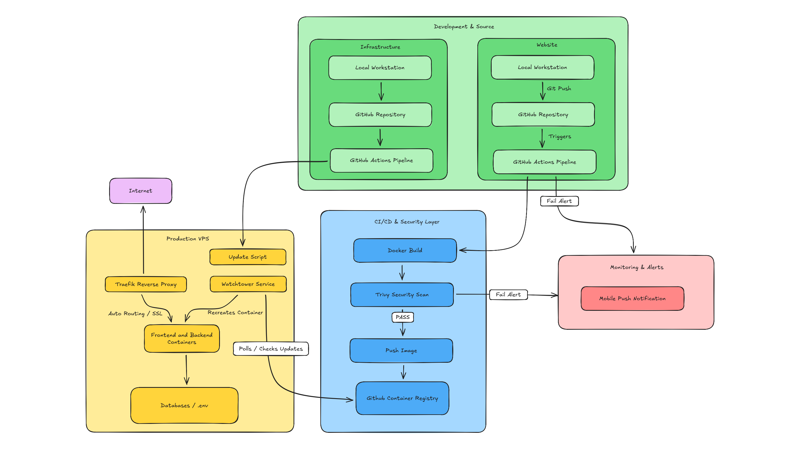
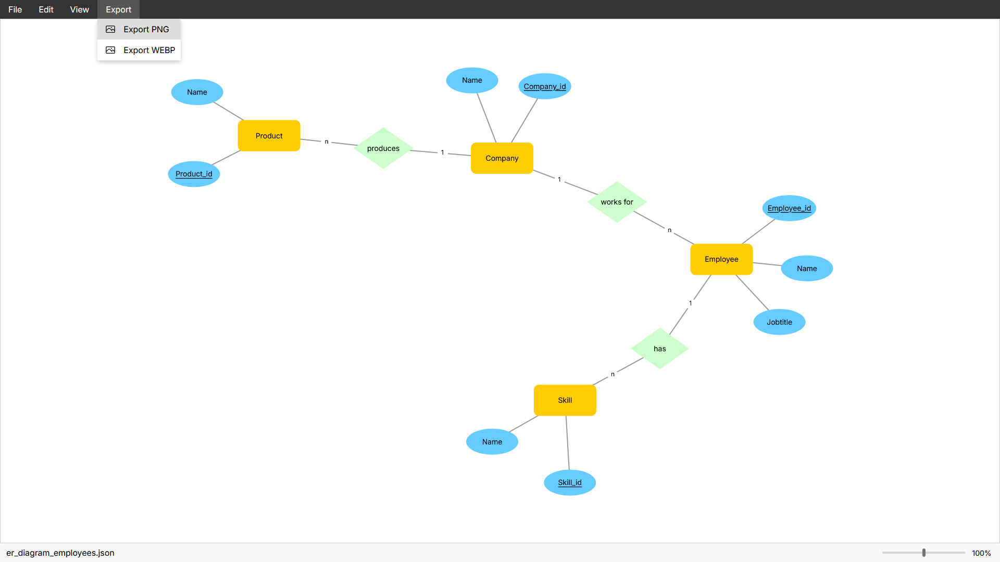
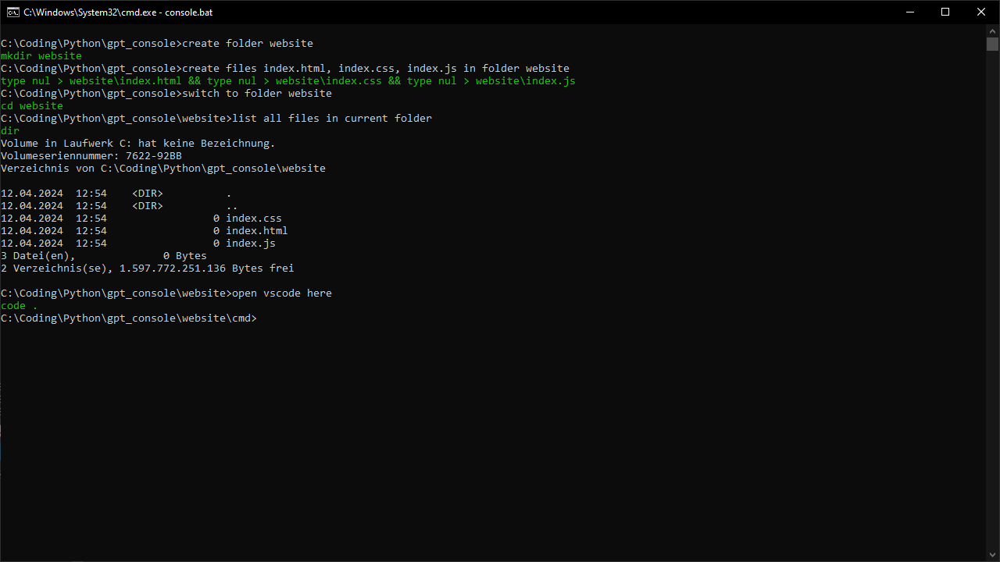
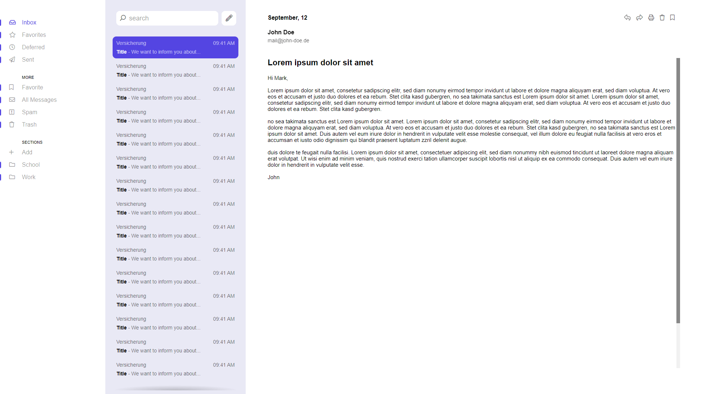
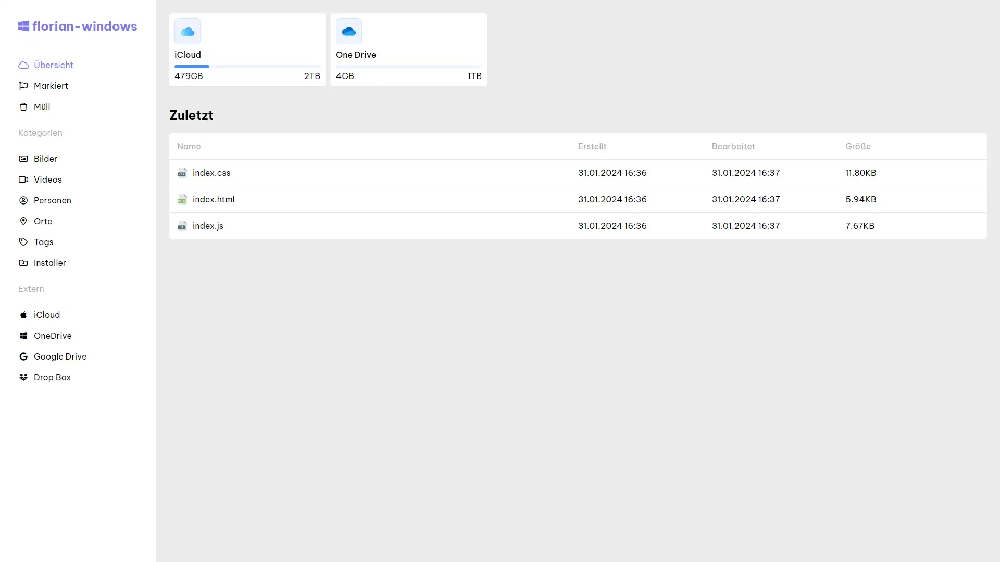
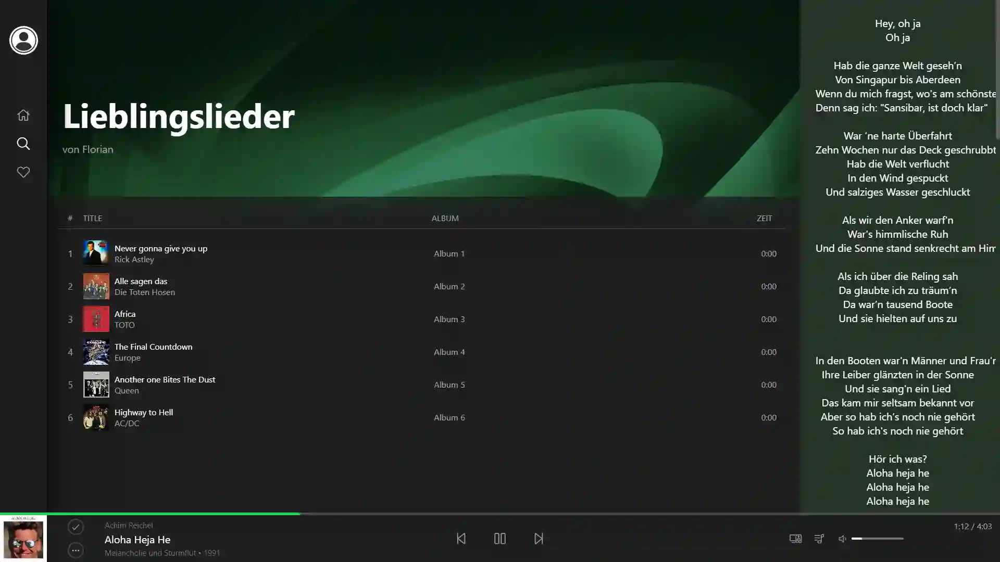

Projects

CI/CD Pipeline and Infrastructure as Code
Automated a full CI/CD pipeline using GitHub Actions and Watchtower for containerized deployments. I modularized the infrastructure by migrating to a version-controlled 'Service Include' architecture, significantly reducing manual overhead and improving system maintainability.

ERM - Editor
I have developed an editor for entity relation ship diagrams. With d3.js i made sure that the elements that make up the diagram are automatically arranged appropriately, making it extremely easy to work on a diagram. You can try it out here.
Control lamp over WIFI
In this project i created a small library to control a lamp
wirelessly using Python code over a WiFi network. With simple code commands, users can
turn the lamp on/off, adjust brightness levels, change the color and schedule automatic
operations. This project offers convenience, flexibility, and automation possibilities
for lamp control within a network environment.

Spotify Stats PWA
In this project, I developed a Progressive Web Application (PWA)
that integrates with Spotify by using its API. By connecting their Spotify account,
users can track their listening habits, and the app provides detailed statistics on
listening patterns, including the times when they typically listen to their favorite
songs.
Fire detection AI
In this project, I developed an AI system to detect fires in
images using advanced machine learning techniques. The system utilizes a convolutional
neural network trained on a diverse dataset to accurately identify fire patterns,
offering a promising solution for enhancing safety and efficiency in fire detection
across various domains.

AI Terminal
This project focuses on developing a console application that
leverages OpenAI's GPT API to enhance the usability of the Windows Command Prompt (CMD)
by integrating natural language processing capabilities. The application enables users
to interact with CMD using natural language commands, eliminating the need to memorize
specific command syntax.

Progressive Web Application
I developed a Progressive Web Application (PWA) that provides
real-time statistics for the popular game Valorant. Users can access comprehensive
statistics, including player rankings, match histories or live data. They can also
perform certain actions from within the app.

Wikipedia Redesign
This project introduces a browser extension designed to modernize
the appearance of Wikipedia. By implementing aesthetic enhancements, such as updated
fonts and layout adjustments, the extension aims to provide users with a more visually
appealing and contemporary browsing experience on the platform while staying true to its
original design. This project offers a simple yet effective solution for those seeking
to refresh the interface of Wikipedia, enhancing usability and engagement for readers
and researchers alike.

Mailclient
This project involved crafting an email client using HTML, CSS, and
JavaScript for the frontend interface, while employing Python for the backend
functionality. The client enables users to interact with their email accounts via SMTP
and IMAP protocols.

File explorer
This project introduces a user-friendly
solution for accessing and managing files across devices within a network. With the
intuitive interface users can seamlessly
navigate and control their files from any other device in the same network. This project
aims to enhance
productivity and streamline file management within network
environments.

Spotify Redesign
This design project focuses on reimagining the visual experience of
Spotify for users. The aim is to enhance user engagement and satisfaction by creating a
more intuitive, aesthetically pleasing, and personalized interface.